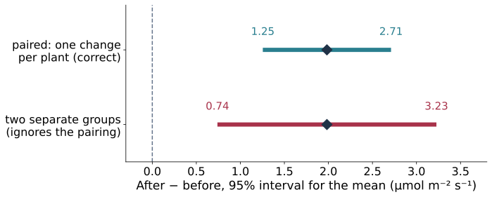
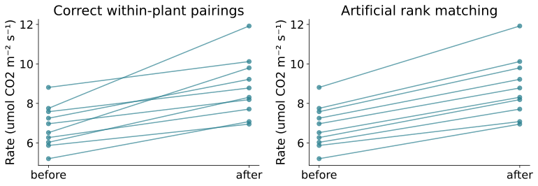
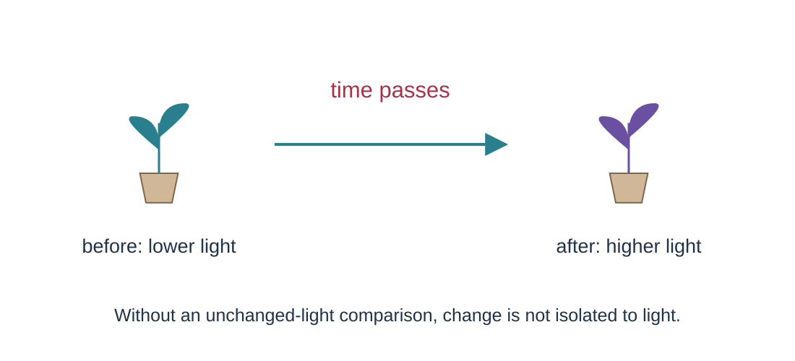

In a plant physiology lab you measure the photosynthesis rate of ten plants, then raise the light and measure the same ten plants again. The plants differ a lot from each other before anything changes. Did the rate go up, and by how much? The same design appears whenever a patient, an animal or a culture is measured before and after something: blood pressure before and after exercise, a leaf before and after shading.
Today you will:
keep the two readings of each plant together, using its identifier;
turn each pair into one change and look at the ten changes;
run a paired t-test and read its estimate, interval and p-value;
say what a before/after design can and cannot show.
Day 17 compared two separate groups. Today each unit is measured twice, which needs a different analysis. Day 19 moves on to calibration lines.
The problem: twenty readings, ten plants
data/paired.csv: ten plants, each measured before and after the light was increased (µmol CO₂ m⁻² s⁻¹).
Before readings range from 5.20 to 8.81: plants differ from each other.
Yet almost every line goes up by a similar amount.
The two readings of one plant are not independent: a high plant before is likely high after.
Question: how large is the change within a plant?
Each of ten plants has a line from its before reading to its after reading; starting levels differ, but every line rises.
Pair by identity, not by position
plant_id says which two readings belong together.
In paired.csv each row holds one plant’s before and after, so the pair is already kept together.
If the readings came in two files, match them by ID before subtracting. Ten rows in each file is not enough.
Sorting the whole table is safe: rows move together. Sorting one column on its own breaks the pairs.
Plant identifiers connect before and after readings even when the two lists are in different orders.
One change per plant
Three example plants show their after-minus-before change: L01 +1.08, L02 +4.17, L03 +1.31.
Change = after − before for the same plant. Positive means the rate went up.
paired = TRUE matches position 1 with position 1, and so on. That is why the rows must hold true pairs.
The same numbers come from t.test(paired$change_umol_m2_s, mu = 0): a paired test is a test of the changes against zero. It is one analysis, not two pieces of evidence.
The interval is about the mean change; individual plants changed from 1.08 to 4.17.
Why not use Day 17’s Welch test?
Treating before and after as two separate groups gives the same estimate, 1.98, but an interval of 0.74 to 3.23.
That interval is wider because plant-to-plant differences stay in the calculation.
The paired analysis removes them: each plant is compared with itself.
The design decides which test to use, not which result looks better.

The paired interval 1.25 to 2.71 is narrower than the 0.74 to 3.23 interval from wrongly treating the readings as two separate groups.
Pitfall: sorting the columns separately
Sorting before and afterone column at a time matches the smallest with the smallest, not plant with plant.
The mean change is still 1.983: means cannot detect the mistake.
But the SD of the changes drops from 1.02 to 0.50, and p shrinks to about 0.0000006.
A smaller p after breaking the pairs is not better evidence; it is a wrong analysis.

Left: correct within-plant pairings cross each other. Right: matching by rank gives parallel lines that connect readings from different plants.
Pitfall: few pairs leave much uncertainty
Illustrative example: three plants, before 5, 8, 6 and after 7, 9, 9.
Changes +2, +1, +3: all positive, mean 2.
95% interval for the mean change: −0.48 to 4.48 (p ≈ 0.07).
With three pairs we cannot even be sure of the direction. That is not proof of no effect: report the uncertainty.
Three observed changes of 1, 2 and 3 have a mean of 2, but the 95 percent interval for the mean change runs from about −0.48 to 4.48 and includes zero.
What the design cannot show
Every plant was measured before, then after. Light changed, but time also passed: acclimation, time of day or instrument drift could contribute.
There is no group of plants measured twice without a light change.
A small p-value does not separate light from time.
Better design: add plants measured twice under unchanged light, and use more plants.

Plants are measured in lower light and later in higher light; light and elapsed time change together.
Write the result
“Across 10 plants, photosynthesis rate was on average 1.98 µmol m⁻² s⁻¹ higher after the light was increased than before (95% CI 1.25 to 2.71; paired t-test, p ≈ 0.0002). Light and measurement order changed together, so the change cannot be attributed to light alone.”
Misreading
Better
“We had 20 observations.”
10 plants, each measured twice: 10 pairs.
“Most plants changed by 1.25 to 2.71.”
The interval is for the mean change; plants changed by 1.08 to 4.17.
“Light caused the increase.”
Light and time changed together; no unchanged-light group.
“Sorting the columns gave a smaller p, so it is better.”
Sorting destroyed the pairs; the result is invalid.
Summary
Concept
Key fact
Paired design
Each unit measured twice; the unit, not the reading, is independent (10 plants, not 20 readings)
Identity
Match readings by plant_id; never sort one column on its own
Change
after − before per plant; the direction is a choice you write down first
Paired t-test
t.test(after, before, paired = TRUE) = one-sample test of the changes against 0
Estimate and CI
Mean change 1.98, 95% CI 1.25 to 2.71 µmol m⁻² s⁻¹; about the mean change
Why pair
Removes plant-to-plant differences: narrower than treating the columns as two groups
Few pairs
Three pairs: CI −0.48 to 4.48; uncertain, not “no effect”
Design limit
Fixed before/after order: light and time are mixed; a test cannot separate them
Next (Day 19, calibration): a straight line that turns an instrument reading into a concentration.
Now:open the Day 18 exercises. Make paired-report.Rmd with the ID check, the change plot, the paired test and a limitation; save output/day18-changes.png and render.